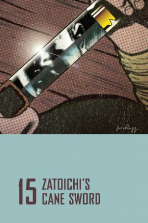

Also known as:座頭市鉄火旅 (original title)
Country:Japan, 93 minutes
Spoken languages:Japanese
Genres:Adventure, Action, Drama
Director(s):Kimiyoshi Yasuda
Writer(s):Ryōzō Kasahara
Video Codec:Unknown
Number: 2832


Certification:
Storyline:
Zatoichi comes upon the town of Tonda, overrun by gangsters. Using one of his favorite techniques, Zatoichi proceeds to win 8 ryo in a rigged gambling game. Of course, the local gangsters attempt to kill him, and the adventure begins. It turns out a blacksmith named Senzo examines Zatoichi's cane sword, and discovers it to be forged by his old mentor. Senzo discovers the sword is at the end of its usefulness and will break when it is used next.
Cast:

Medium: Bluray,
Comments: Part of: Zatoichi - The Blind Swordsman collection
Loaned: No
Aspect ratio: Unknown